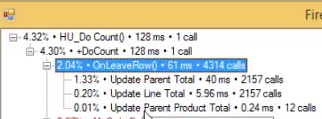

ReevaluateControlExpressionsOnRelevantValueChangeOnly
This article explains the performance problem presented in the Using the Profiler to Investigate non database Related Performance Issues article.
In application that were migrated from magic versions prior to XPA, all the expressions used on the View of a Controller were
re-evaluated after an update of any Column in the Controller.
This can have a performance cost. In the example used in this article's video, we can see that the BindVisible method was evaluated 4314 times, just by the "Update Parent Total" part of the OnLeaveRow (while being totally irrelenat to the BindVisible method or values)

We can control this behavior, by changing the Form property called ReevaluateControlExpressionsOnRelevantValueChangeOnly to true

This property means that an Expression for a Control on the Form will only be re-evaluated if a column that was used in that expression was changed.
This has a positive affect on the process, essentially removing thousands of expression evaluations, improving our process by a factor of 10.

Previous NextNote that this property might also have side effects. If you have an expression that is based on a Column from another
Controller, or not based on a column at all (ieGetParamorTime) it will not get evaluated.
Help us improve, Edit this page on GitHub
or email us at info@fireflymigration.com